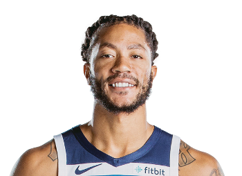

Derrick Martell Rose

Chicago, Illinois, >U.S.
+1(234)1231234
drose@nba.com
Summary
- Derrick Rose, the youngest MVP in NBA history, earned the award in 2011 with the Chicago Bulls. Known for his explosive athleticism and dynamic playmaking, Rose revolutionized the point guard position.
Career Highlights and Awards
- NBA Most Valuable Player (2011)
- 3× NBA All-Star (2010–2012)
- All-NBA First Team (2011)
- NBA Rookie of the Year (2009)
- NBA All-Rookie First Team (2009)
- Third-team All-American – AP, NABC (2008)
- First-team Parade All-American (2007)
- Third-team Parade All-American (2005)
- Fourth-team Parade All-American (2006)
- McDonald's All-American (2007)
- Illinois Mr. Basketball (2007)
Badges
All Badges
- Acrobat
- Fast Twitch
- Acrobat
- Fearless Finisher
- Hyperdrive
- Pro Touch
- Acrobat
- Fast Twitch
- Aerial Wizard
- Ankle Breaker
- Comeback Kid
- Giant Slayer
- Handles For Days
- Killer Combos
- Middy Magician
- Needle Threader
- Posterizer
- Slithery
- Space Creator
- Special Delivery
- Work Horse
- Catch and Shoot
- Corner Specialist
- Dimer
- Relay Passer
Career History
Memphis Grizzlies
2023 - Present
New York Knicks
2021 - 2023
Detroit Pistons
2019 - 2021
Minnesota Timberwolves
2018 - 2019
Cleveland Cavaliers
2017 - 2018
New York Knicks
2016 - 2017
Chicago Bulls
2008 - 2016
Connect with me!
Iconic Photos |
Basketball Reference |
Derrick Rose Shoes